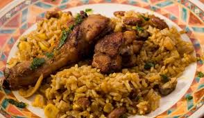

Chicken with Rice

Chicken with Rice - Bulgarian Classic!
Chicken over rice is a 1 pan oven-baked dinner casserole you'll love.
This dish requires only 4 ingredients (not counting the seasonings), and about an hour of your time.
You in?
Ingredients:
- Rice: long grain rice is best. Sub with short grain or brown rice, but adjust the liquid level accordingly so it's well cooked, but not dry.
- Chicken: drumsticks and thighs. (Bones in, or deboned chicken, up to you) Keep the skin on. If you don't like the skin, take it off, but only after baking. Avoid: chicken breast and wings.
- Seasonings: use chicken stock powder, a bouillon cube, or Vegeta, (together with salt and pepper). Alternatively, substitute with seasonings of choice.
- Oil: vegetable, sunflower, or coconut oil will do the trick. Avoid: olive oil.
- (Optional) chicken broth: instead of water to cook the rice in.
Steps:
- Baked Chicken Over Rice Casserole. Make a marinade. Coat the chicken. Let rest. Place in a greased pan. Bake for 15 min.
- Baked Chicken Over Rice Casserole. Flip chicken pieces. (If using glassware for cooking, you don't need to flip them.) Lower heat. Bake another 15. Take the chicken out. Scrub the remaining pieces, and leave in the pan.
- Baked Chicken Over Rice Casserole. Add rice and water (or broth). Bake 25 minutes. Place chicken over rice. If there is a lot of liquid left over, keep the oven running for 10 more minutes. If there is less water, turn the oven off when you add the chicken.